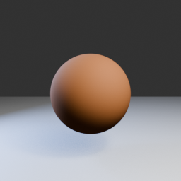
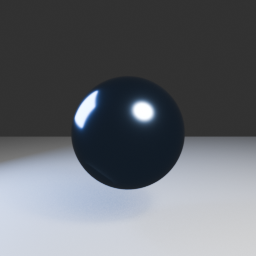
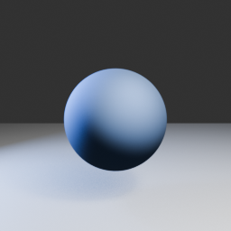
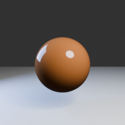
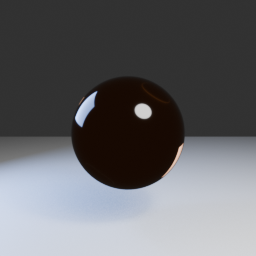
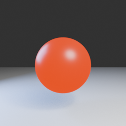
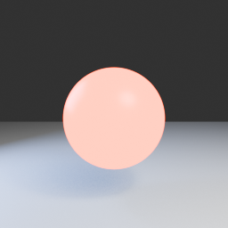

Blender 5.2.2 LTS · d13f752e3b9c
節點和效果怎麼確認與 Blender 一致？
不是只看名稱：本站保存 Blender 官方執行檔匯出的節點結構，並用真實 EEVEE 渲染做 A/B 基準。瀏覽器做不到的部分會明確標示。
81 / 82節點映射到官方 5.2.2 結構；1 個為已移除舊節點
12官方 Blender 參考渲染
6單一參數 A/B 效果組
90已驗證 Material Assets
驗證方法
- 以 Blender 5.2.2 執行檔匯出 118 種著色節點的中英文名稱、插槽、預設值與選項。
- 自動比對網站 82 個節點；81 個對應現行官方節點，Point Density 保留為歷史文件。
- 固定場景、攝影機與燈光，只改一個參數後由 EEVEE 渲染，確認每組結果確實有像素差異。
- 將網站節點圖匯出到 Blender，重建所有 90 個材質並重新開啟 .blend 檢查資產與接線。
Blender 5.2.2 真實渲染 A/B
以下圖片不是網站預覽，而是測試時由 Blender 5.2.2 EEVEE 自動輸出的固定基準。







誠實的邊界
Three.js 即時光柵預覽不等於 Cycles 路徑追蹤。體積、間接照明、多物體光線互動和部分 EEVEE／Cycles 專屬功能必須回 Blender 驗證；百科會逐節點標示「公式對齊」「視覺近似」或「僅文件」。